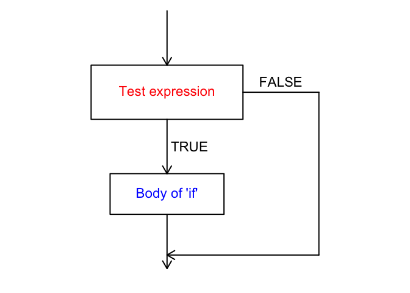

Control structures 1: if and if...else
Why, and what?
Control structures allow us to alter the flow of a program, and to make decisions about when or how many times an action occurs. These tools can help you automate processes that require decision-making or repeated actions.
In the next two lessons, we will introduce you to two of them: if…else statements and for loops.
if and if...else
if
if statements test whether a condition is true, and then execute a piece of code if so. This can be diagrammed as follows:

In R, an if statement looks like the following:
if (test condition is true) {
run this line of code
}Note that the conditional test is in parentheses, and the action to be executed is in curly braces { }. It is not necessary to put the body of the if statement on a separate line, but this helps your code to be more readable. The same is true for the indentation - it is there to help you read your code more easily.
As an example, we can write an if statement to act based on whether a number is positive.
a <- 4 # Set value for a
if (a > 0) {
print("positive")
}## [1] "positive"But what if the number is negative? Try this out for yourself.
With a set to a negative value, nothing was printed. Let’s change the statement so that “negative” is printed if the condition is not true. Here’s where the else part comes in.
if...else
An if…else statement controls flow in this way:

To accomplish this, the code will look like this:
if (test condition is true) {
run this line of code
} else {
run this other line of code instead
}Note that the else has to be on the same line as the closing bracket of the if statement.
Building onto the earlier example, we can add the else part to have the function print “negative” if the value is not above 0. We’ll set the value of a to a negative number to demonstrate the flow:
a <- -3
if (a > 0) {
print("positive")
} else {
print("negative")
}## [1] "negative"Great, our statement works! But what if the value of a is 0? Try this out for yourself.
In this case, our assessment is incorrect. We can add a second test condition to the statement using else if, which effectively nests one if…else inside the other.
The R code will be structured like this:
if (test condition is true) {
run this line of code
} else if {
run this other line of code instead
} else {
run this line of code when none of the previous conditions are true
}As an example, with a now equal to 0, and specifying all expected conditions (with the last else as a silly warning):
a <- 0
if (a > 0) {
print("positive")
} else if (a < 0) {
print("negative")
} else if (a == 0) {
print("zero")
} else {
print("Houston, we have a problem.")
}## [1] "zero"Try changing the value of a and re-running the if...else statement to see for yourself how it works.
Is it possible to get to the last else statement? How, or why not?
There is another way to write an if…else statement, and that is with the ifelse function. This function has 3 arguments: the test case; yes, or what to do if the test case is true; and no, or what to do if the test case is false. Let’s use this function to test whether a number is even. We can do that using %%, which gives the remainder after division.
a <- 43
a %% 2## [1] 1ifelse(test = a %% 2 == 0, yes = "even", no = "odd")## [1] "odd"Here, if the remainder after division by two is equal to 0, the test case is true, and “even” is printed. Otherwise, if the test case is false, “odd” is printed. With a equal to 43, the remainder was 1, and therefore “odd” was printed. Try a few values of a for yourself to see how this works.
Let’s work with the nutrients data (from Experiment_nutrients.csv) to demonstrate when this could be helpful. As a reminder, here is the data frame:
nutrients## Treatment Replicate Ammonium Nitrate Nitrite
## 1 1 1 8.2 1.7 0.4
## 2 1 2 6.9 3.6 1.5
## 3 1 3 12.1 2.8 0.8
## 4 2 1 10.5 0.4 0.7
## 5 2 2 8.6 2.7 1.2
## 6 2 3 7.8 4.1 0.9The instruments and methods that are used to measure nutrient concentrations often have detection limits, and values below this limit cannot be distinguished from 0. For this reason, one might choose to set these values equal to 0 or to NA. Let’s say the detection limit for nitrite is 0.5 ppm. Rather than manually checking which values are less than or equal to 0.5, and then changing those values using subsetting, we can use an ifelse statement within mutate to do this for us. We’ll add the “corrected” data as a new variable.
nutrients <- nutrients %>%
mutate(Nitrite_corr=ifelse(Nitrite<=0.5, NA, Nitrite))
nutrients## Treatment Replicate Ammonium Nitrate Nitrite Nitrite_corr
## 1 1 1 8.2 1.7 0.4 NA
## 2 1 2 6.9 3.6 1.5 1.5
## 3 1 3 12.1 2.8 0.8 0.8
## 4 2 1 10.5 0.4 0.7 0.7
## 5 2 2 8.6 2.7 1.2 1.2
## 6 2 3 7.8 4.1 0.9 0.9Challenge
Write an if statement that takes a person’s age (numeric element) as input and returns a statement about whether or not the person is old enough to vote.
Write an if statement that takes a name (character element) as input and returns a statement about whether or not the name is the same as yours.
Add a variable,
Abundance, to thetreesdata frame that is equal to"High"if the species was counted at least 10 times, and"Low"otherwise.Add a variable,
Period, to theFundybirdsdata frame that indicates whether each bird was counted in the morning or the afternoon.
Bonus challenge
Write an if statement that returns a message if any values of
Nitrateinnutrientsare less than 2. (Give this a try before scrolling down!)
..
..
..
..
..
..
..
..
..
..
..
..
..
..
..
..
..
..
..
..
..
..
..
..
..
..
..
..
..
..
..
..
..
..
..
..
..
…did you get the error message below?if (nutrients$Nitrate < 2) { print("Less than two!") }## Warning in if (nutrients$Nitrate < 2) {: the condition has length > 1 and ## only the first element will be used## [1] "Less than two!"What happened here?
The if statement can only accept a single element, so if you try to use a vector with multiple elements, it will only act on the first one. We can use the function
anyto assess whether any elements of a vector areTRUEand return only a singleTRUEorFALSEvalue. Similarly, we can use the functionallto assess whether all elements of the vector areTRUE.For example:
any(nutrients$Nitrate < 2)## [1] TRUE
Bonus challenge redux
- Try the above challenge again, using the
anyfunction.